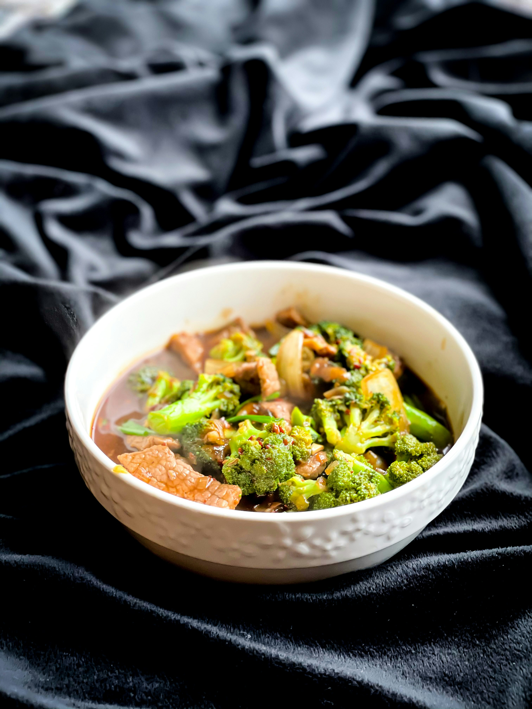

Home
Beef and Brocoli

Description
Beef and Broccoli is a delicious and popular Chinese dish known for its tender beef and vibrant broccoli, all coated in a savory, slightly sweet sauce. This stir-fried dish is quick and easy to make, perfect for a weeknight dinner.
The beef is thinly sliced and stir-fried until it's just cooked, while the broccoli remains crisp and bright. The sauce, typically made with soy sauce, garlic, and a bit of ginger, ties everything together for a flavorful and satisfying meal.
Ingredients
- 1 lb flank steak or sirloin, thinly sliced against the grain
- 2 cups broccoli florets
- 2 tablespoons vegetable oil (for stir-frying)
- 3 cloves garlic, minced
- 1 tablespoon ginger, minced
- 3 tablespoons soy sauce
- 2 tablespoons oyster sauce
- 1 tablespoon cornstarch
- 1/2 cup beef broth or water
- 1 tablespoon brown sugar
- 1 teaspoon sesame oil
- Salt and pepper to taste
Steps
- Prepare the ingredients: Slice the beef thinly against the grain. Wash and chop the broccoli into small florets. Mince the garlic and ginger.
- Blanch the broccoli: Bring a pot of water to a boil. Add the broccoli florets and cook for 1-2 minutes until bright green. Drain and set aside.
- Make the sauce: In a small bowl, mix together soy sauce, oyster sauce, cornstarch, beef broth (or water), brown sugar, and sesame oil. Stir until the cornstarch is fully dissolved.
- Stir-fry the beef: Heat a large pan or wok over medium-high heat and add the vegetable oil. Once hot, add the sliced beef in batches, cooking until browned, about 2-3 minutes per batch. Remove and set aside.
- Stir-fry the garlic and ginger: In the same pan, add the minced garlic and ginger. Cook for 30 seconds until fragrant.
- Combine beef and broccoli: Add the cooked beef and broccoli to the pan, then pour in the sauce. Toss everything together and cook for another 2-3 minutes, allowing the sauce to thicken and coat the beef and broccoli evenly.
- Serve: Remove from heat and season with salt and pepper to taste. Serve hot over steamed rice.